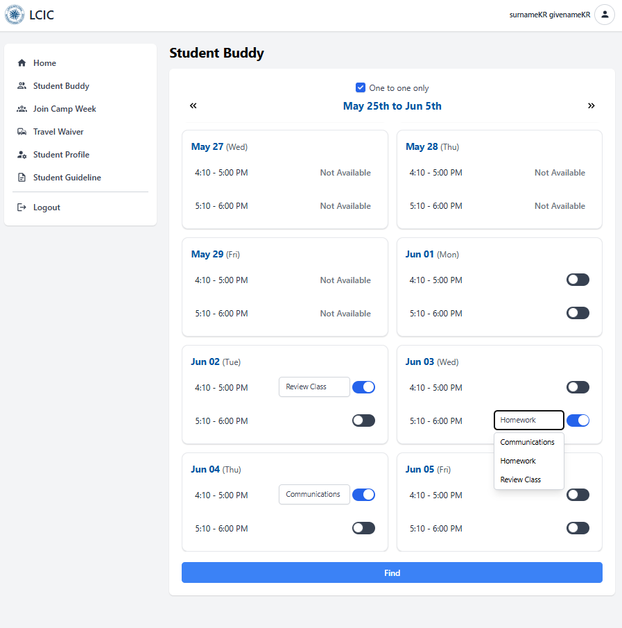
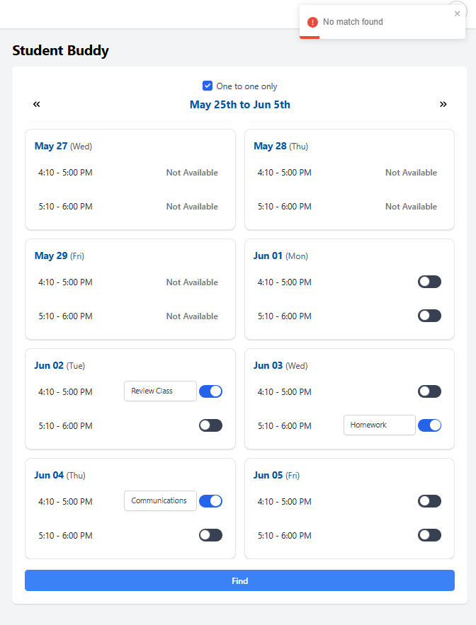
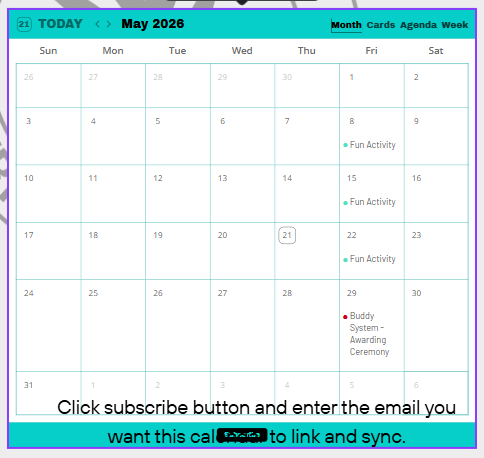
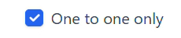
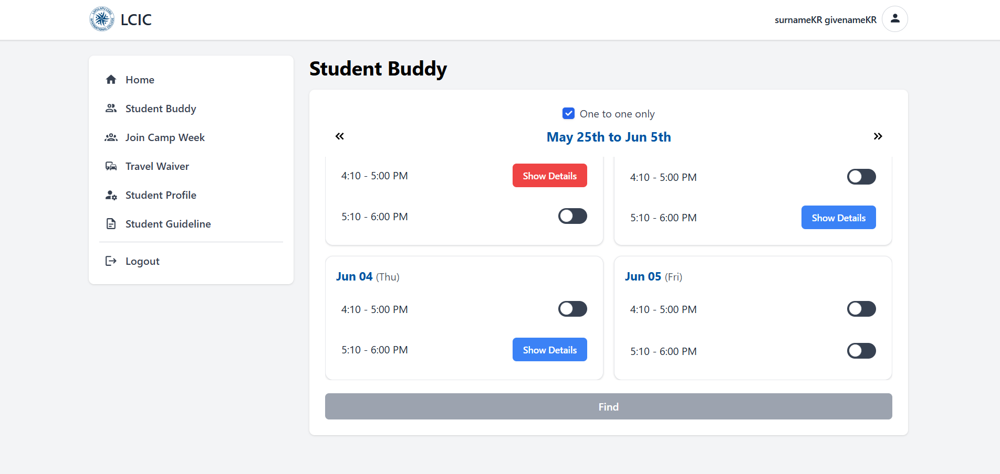
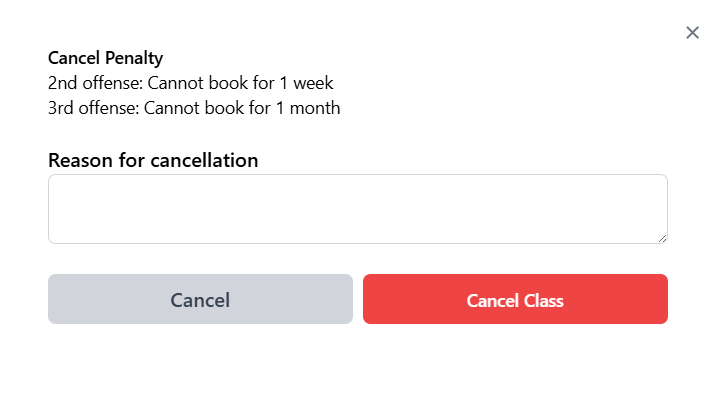
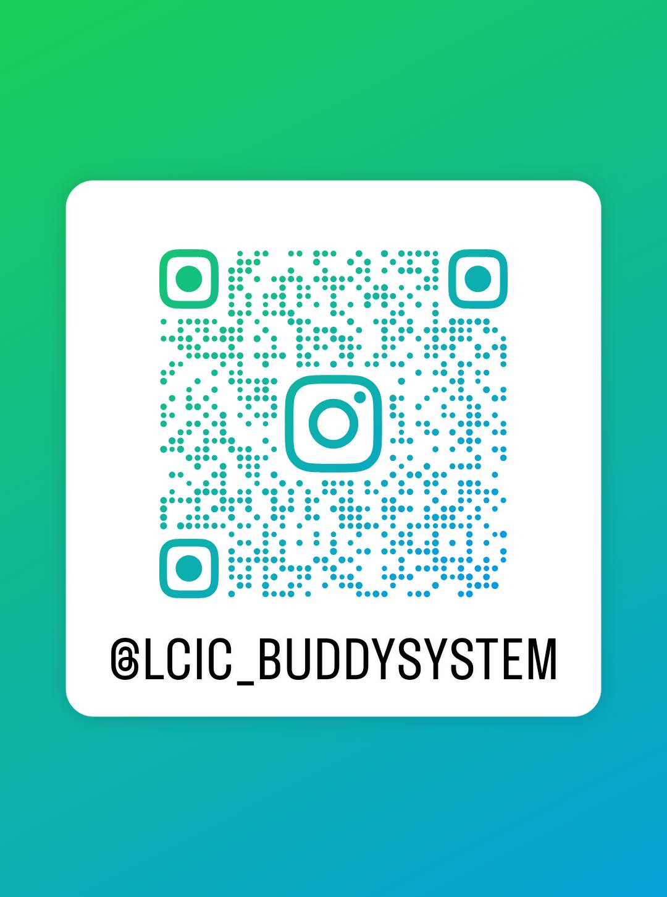

평일
16:10–17:00
17:10–18:00
17:10–18:00
금요일
Fun Activity
(50분)
(50분)
장소
CELS 3층 (평일)
2층 SALC (금/행사)
2층 SALC (금/행사)
참고
선택과목 — 출석에 반영
버디 세션은 나(국제 학생)와 현지 LCIC 학생을 짝지어 영어를 연습하고, 친구를 사귀고, 현지 문화를 배우는 활동입니다 — 한 세션 50분. 예약은 Student System에서 직접 합니다.
1 예약하는 법
- 로그인 정보 확인LCIC 이메일에서 Student System 아이디·비밀번호를 확인하세요.
- “Student Buddy” 열기Student System에 로그인 후 좌측 메뉴에서 “Student Buddy”를 클릭.
- 1:1 / 1:2 선택1:1만 원하면 상단의 “One to one only”를 체크하세요.
- 시간 켜고 활동 선택원하는 날짜·시간 토글을 켜고 활동을 고르세요 (Communications / Homework / Review Class).
- 예약 전 다시 확인다른 일정과 겹치지 않는지 확인. 확실하지 않으면 예약하지 마세요.
- “Find” 클릭현지 버디가 매칭되면 예약 완료입니다.

실제 예약 화면: “One to one only” 체크 → 시간 토글 켜기 → 활동 선택 → Find.

2 시간 & 활동
피크 시간 — 사람이 많고 CELS 3층이 붐빕니다.
한산한 시간 — 조용한 걸 원하면 이 시간.
Communications
영어로 자유 대화 — 가장 인기.
Homework
버디가 숙제를 안내 (대신 해주지 않음).
Review Class
내 어려움을 먼저 설명하면 수업 이해를 도와줌.
Fun Activity (금)
게임·대회·캠퍼스 투어 — 금요일 전용 50분.

Event Guide 캘린더 — Fun Activity는 매주 금요일. 행사 날짜·장소도 여기서 확인.
3 짝 & 만남 장소
현지 버디 1명 + 나.
현지 버디 1명 + 나 + 시스템이 랜덤 배정한 다른 국제 학생 1명.
예약 화면 상단의 이 체크박스로 설정합니다:

4 취소 & 벌점
- Student Buddy로 이동예약한 세션을 찾아 “Show Details” 클릭.
- 사유 입력 후 Cancel Class취소 사유를 적고 “Cancel Class” 클릭. 취소되면 버튼이 빨간색으로 변합니다.

예약됨 = 파란 “Show Details”, 취소되면 빨간색. 이 버튼으로 취소합니다.
1회벌점 없음.
2회차1주일간 예약 불가.
3회차1개월간 예약 불가.

취소창에 표시되는 벌점 안내.
⚠️ 취소한 세션엔 (실수로 취소했더라도) 가지 마세요. 실수로 취소했다면 신고하세요.
5 버디가 늦거나 안 올 때
시작 시각부터 15분까지 방에서 기다리세요.
Student System에서 신고하세요 (아래 참고).
매일 명심: 목표를 갖고 예약하기 · 정시 출석 · 취소 피하기 · 세션 즐기기.
Accountable
Graceful
Organized
Obedient
Dedicated
Brave
Understanding
Dynamic
Diligent
You

@LCIC_BUDDYSYSTEM
QR을 스캔해 버디시스템 소식·행사·사진을 받아보세요.
Q 버디 세션은 어떻게 예약하나요?
Student System에 로그인 → 좌측 Student Buddy 클릭 → (1:1만 원하면 One to one only 체크) → 날짜·시간 토글을 켜고 활동(Communications / Homework / Review Class) 선택 → Find 클릭. 현지 버디가 매칭되면 예약 완료입니다.
Q 시간대와 활동 종류는 어떻게 되나요?
평일은 16:10–17:00(붐빔)과 17:10–18:00(한산) 두 시간대입니다. 활동은 Communications(자유 대화), Homework(숙제 안내 — 대신 해주지 않음), Review Class(수업 이해 돕기). Fun Activity는 금요일 전용 50분 세션입니다.
Q 1:1과 1:2는 무엇이 다른가요?
예약 화면 상단의 One to one only 체크박스로 선택합니다. 1:1 = 현지 버디 1명 + 나. 1:2 = 현지 버디 1명 + 나 + 시스템이 랜덤 배정한 다른 국제 학생 1명.
Q 버디는 어디서 만나나요?
평일 세션은 CELS 3층에서 만납니다 — 유리벽의 Buddy Tracker 시트에서 본인 배정을 확인하세요. 금요일 Fun Activity·행사(예: 시상식)는 2층 SALC, Language Building. 정확한 장소·시간은 Event Guide 캘린더에서 확인하세요.
Q 취소하면 불이익이 있나요?
1회 취소는 벌점 없음, 2회차는 1주일간 예약 불가, 3회차는 1개월간 예약 불가입니다. 취소 방법: Show Details → 사유 입력 → Cancel Class(버튼이 빨갛게 변함). 취소한 세션엔 가지 마세요 — 실수로 취소했다면 신고해 주세요.
Q 버디가 늦거나 오지 않으면 어떻게 하나요?
지각한 경우 시작 시각부터 15분까지 방에서 기다리세요. 결석하거나 태도에 문제가 있으면 Student Buddy → Show Details → Select an Issue → Submit Issue로 신고합니다. 현지 학생의 태도 문제는 mariaalyssa.paquibot@lcic.edu.ph 또는 leo.ceniza@lcic.edu.ph로 이메일 주세요.
Q “No match found”는 왜 뜨나요?
선택한 시간에 가능한 현지 버디가 없다는 뜻입니다 — 오류가 아닙니다. 다른 날짜·시간을 골라 다시 시도하면 됩니다.
Q 버디시스템 소식은 어디서 보나요?
인스타그램 @LCIC_BUDDYSYSTEM에서 행사·소식·사진을 볼 수 있습니다. 위의 QR 코드로도 바로 팔로우할 수 있습니다.
Lapulapu Cebu International College — CELS · Student Buddy System